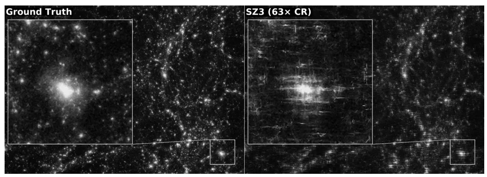
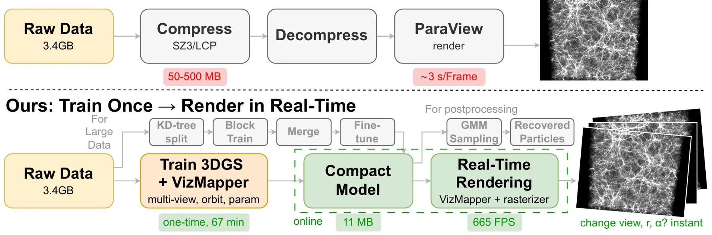
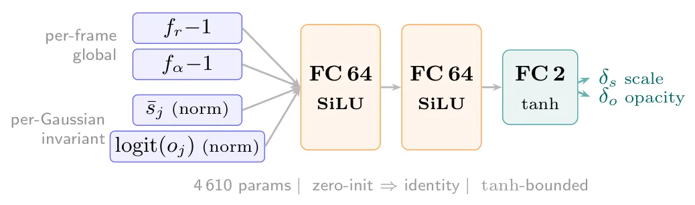
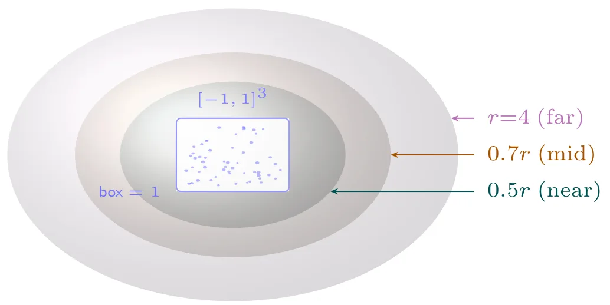
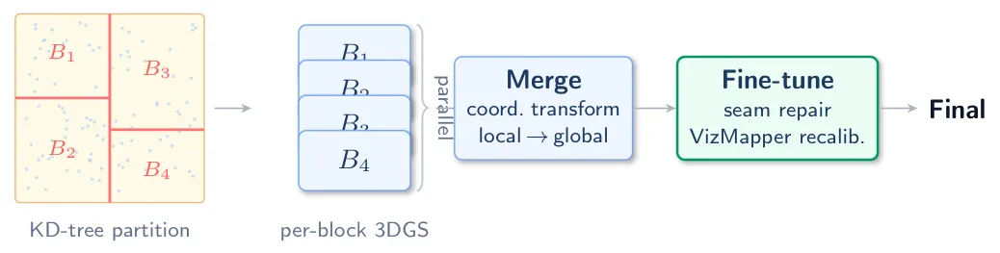
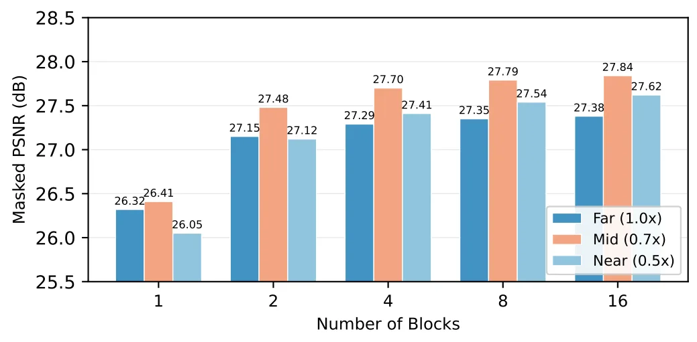
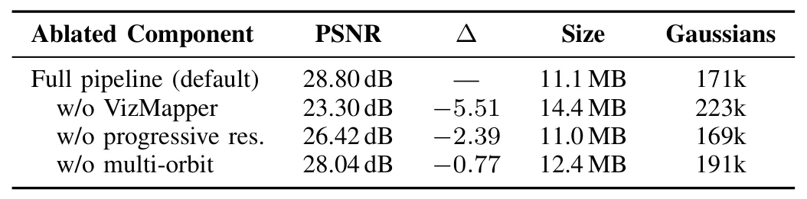
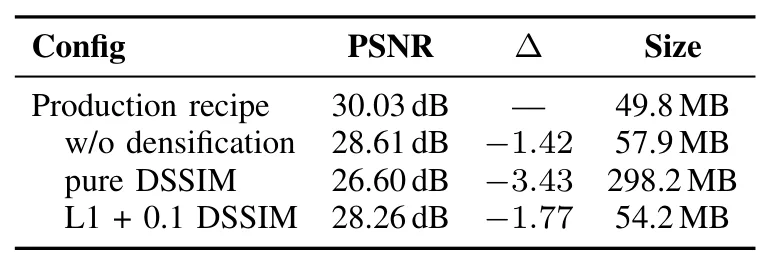
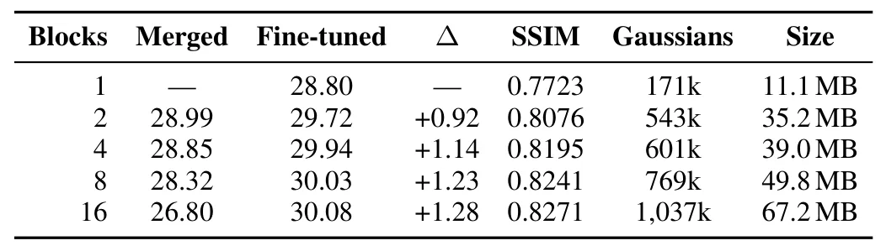
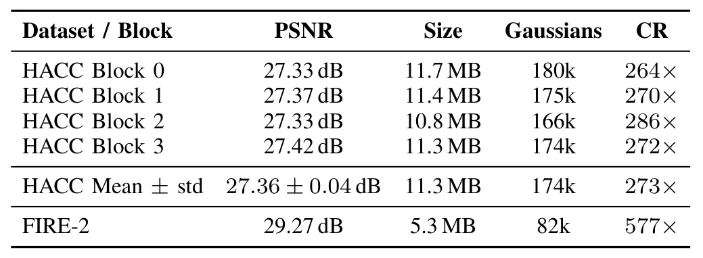

用于科学粒子数据压缩与渲染的 3D Gaussian Splatting3D Gaussian Splatting for Scientific Particle Data Compression and Rendering
对大规模点/粒子表示、分块训练和 visualization-aware compression 有启发；任务不是 SLAM map，缺少在线更新、几何定位误差和传感器观测一致性验证。
一句话工作总结
以分块 3DGS 和可视化参数适配网络压缩数亿级粒子数据，在 65× 压缩下兼顾渲染质量与交互速度。
摘要
大规模粒子仿真会产生数亿粒子，使存储、传输和交互可视化承压；传统有损压缩器在 data space 中工作，无法保证 downstream visualization fidelity。ParticleGS 直接为 rendered image quality 学习 compact 3DGS representation，并组合 multi-stage/multi-orbit training、可在推理时适配用户指定可视化参数的轻量 VizMapper，以及 KD-tree spatial block training 与 global fine-tuning。在 2.81 亿粒子的 HACC cosmological simulation 上，8-block model 以 65× compression 达到 30.03 dB PSNR，在相近压缩率下比 SZ3 高 5–8 dB；摘要称其还可泛化到其他 HACC 区域和 FIRE-2 simulation，并在单 GPU 达到 662 FPS。
Large-scale particle simulations produce hundreds of millions of particles, straining storage, transfer, and interactive visualization. Existing lossy compressors such as SZ3 operate in data space and provide no guarantees on downstream visualization fidelity. We propose ParticleGS, a visualization-aware framework based on 3D Gaussian Splatting (3DGS) that learns a compact representation directly optimized for rendered image quality, combining (1) a multi-stage, multi-orbit training pipeline, (2) VizMapper, a lightweight network that adapts a single trained model to user-specified visualization parameters at inference time, and (3) spatial block training with KD-tree decomposition and global fine-tuning. On a 281-million-particle HACC cosmological simulation, our 8-block model reaches 30.03 dB PSNR at 65x compression, outperforming SZ3 by 5-8 dB at comparable ratios, and generalizes without tuning to additional HACC regions and a dark-matter-only FIRE-2 simulation. It renders at 662 FPS on a single GPU, over 2,300x faster than ParaView on the full particle data.
中文解读摘录
- 作者：Bo Jiang, Youyuan Liu, Taolue Yang, Sheng Di, Sian Jin
- 价值判断：虽非 SLAM 论文，但展示了 3DGS 对数亿级非传统点/粒子数据的 compact representation 与 interactive rendering 能力，可为大规模点云地图分块、LOD 和 visualization-aware compression 提供旁证。
- 技术要点：ParticleGS 采用 multi-stage/multi-orbit training、根据用户可视化参数自适应的 VizMapper，以及 KD-tree spatial blocks 加 global fine-tuning。
- 结果与边界：在 2.81 亿粒子 HACC 数据上摘要报告 65× compression、30.03 dB PSNR 和单 GPU 662 FPS；与 SLAM map 的观测更新、几何误差、语义属性及在线压缩仍有明显任务差异。
- 链接：arXiv · PDF
图表/页面预览
{kind=link}

{kind=link}

{kind=link}

{kind=link}

{kind=link}

{kind=link}

{kind=link}

{kind=link}

{kind=link}

{kind=link}
